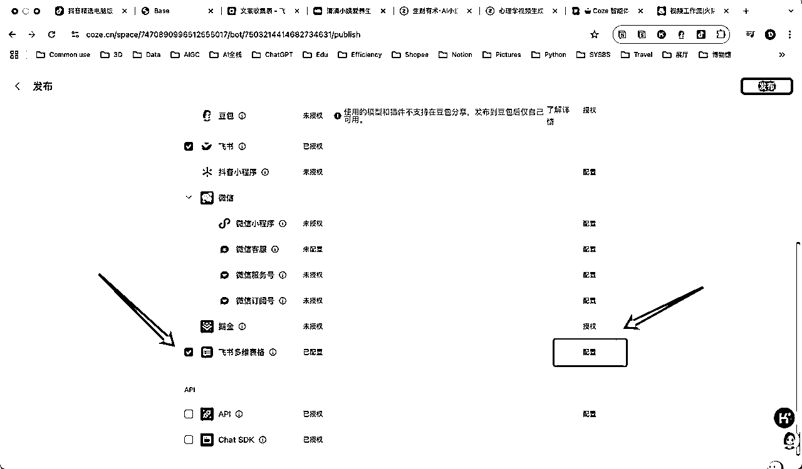

来源：https://r0rel9lqdms.feishu.cn/docx/ApaJdYIkcohPKXxgVXLchBoSnwf
做了一件十分有意思的事情，把@super 黄和@一泽的工具结合了下，做了一个只用点击1次就可以生成 AI 视频的工作流。可用，还算稳定，可迁移场景（只要是模版化的内容都可以优化生成），所以觉得是有意义的，分享给大家～👏欢迎有兴趣的朋友找我一起探讨定制工作流、优化效果🌹
实际第一条视频生成耗时5分钟左右。
视频案例仅作工作流展示用，非真实使用。
工具准备：
可以直接在@Super 黄的精华帖 获取；
（来源于@Super 黄）
在抖音插件的基础上，我用 trae改写了脚本，做成了小红书的插件。可以按照@Super 黄的教程自行开发，或者找我获取；
1、飞书多维表参数需要逐步配置：

APP ID、App Secret：在飞书“开发者后台”界面获取；
Base ID、Table ID：在飞书多维表的 link 内截取；
以上获取方法都可以参见@Super黄的如上教程
2、飞书多维表需要配置固定字段：

以上两个配置容易在操作中忽视，出现视频链接不能批量写入飞书文档的情况（请不要问我为什么知道😅）
具体步骤可以参看我的上篇帖子：
智能体：
工作流： @一泽
⚠️ 注意点：
制作Coze 智能体请在发布的时候点击“飞书多维表”选项，只有智能体才能嵌入飞书多维表字段捷径功能；
发布“飞书多维表”需要先点击“配置”，“控件”请选择成“字段选择器”☑️勾选所有选项就好；
发布需要审核，一般半小时左右。


有两种方法：
| 视频转文案插件 | 优点 | 缺点 | 适用场景 |
|---|---|---|---|
| 自建智能体 | 免费 | 提取效果不稳定 | 自用 |
| 调用字段捷径 | 提取效果稳定 | 氪金 | 商用 |
打开与 Chrome 插件设置时同一份表格，就可以进行流水线操作了：
⚠️注意事项：


为什么要把黄叔和一泽的两个工作流拼一起，逻辑上，是把整个内容生产的工作链粗暴地打通了。既：爆款选题✅——生成大纲✅——生成口播脚本✅——录制✅——剪辑✅——提供封面标题及图片✅——发布运营（可写脚本实现）——数据复盘✅（智能体实现），整条线路的打通。从提升效率到直接产出可复用结果。
输入：抓取爆款内容数据
过程：url 转文本、文本分析、提取要点、改写、文生图/语音/视频
输出：图文/视频
由于工作流逻辑框架可实现，只需要根据自己需要的产出结果，倒推去设置工作流的执行标准（改 prompt）。只要是模板化的内容都可以实现，并且可能有比人脑更惊艳的分析和视觉呈现，比如（仅举例）：
结构化故事：
养生主题：
食物科普：

育儿知识：
当然还可以通过调用即梦、可灵等等工具设置参数生成自己需要的风格3D、超现实、赛博朋克、极简风......语音也是可以用不同风格的 tts，工作流插件里面是可设置的。之后要是还有https://www.lovart.ai/，惊艳了！
理论上只要调用的插件稳定，整条工作流产出的质量就是稳定的。如果不行，有必要的情况下就多买一些平台的 token。